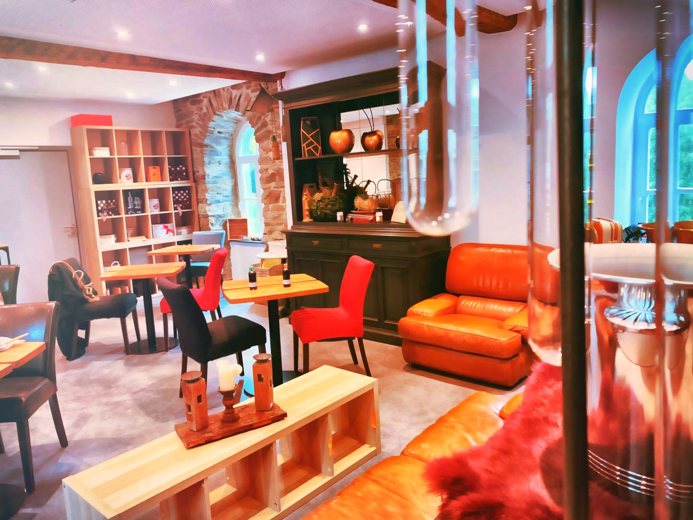

Envie de faire vibrer vos papilles avec les meilleurs vins ? Ou simplement envie de vous ressourcer autour d’un bon thé ou café ? Le tout accompagné d’une dégustation de fromage fin ou l’une de sucreries ? La Cave des Philosophes, la cave à vins de la brasserie Aux Pays de la Vieille Salme, le restaurant d’Amélie Detrembleur, ouvre ses portes. Après une brasserie, un nouveau défi ! En plus des dégustations, retrouvez la boutique composée de toutes leurs créations ainsi que des différents produits locaux.
Un nouveau concept vient de s’installer à Vielsalm. Amélie Detrembleur s’est lancé un nouveau défi. Son restaurant Aux Pays de la Vieille Salme commençant à se faire connaître et apprécier à sa juste valeur. La jeune femme a décidé d’ouvrir au-dessus de celui-ci une cave à vin : La Cave des Philosophes. Amélie s’est mise aux défis de vous proposer une carte de vins spiritueux choisi spécialement pour vous faire voyager. Une carte fait main.
Nous avons voulu créer un lieu qui nous ressemble, déjà chez mon père, j’avais une magnifique cave à vin avec des produits bien sélectionnés, bien définis et on faisait déjà des dégustations de vins, alors je me suis dit pourquoi pas mettre ça ici, parce que quand je vois au restaurant les retours que j’ai de mes vins et surtout le plaisir que j’ai à vous les conseiller, moi ça me ramène dans mon milieu.
Repos, ressource, échange, sureté et convivialité sont des mots maitres de ce lieu. Dès qu’on y entre, une ambiance calme et passante se place autour de nous. Tout est fait pour y passer un bon moment. Un lieu d’exception et de partage pour y découvrir de magnifiques créations en vins, spiritueux et gustatives. De plus, si jamais un vin a marqué vos papilles, il vous est possible de l’acheter sur place. Petit bonus, la salle est assez grande pour vous accueillir lors de vos séminaires. Qui n’a jamais rêvé d’une réunion autour d’un verre de vin de qualité ?
La cave des Philosophes, c’est quoi ? Ça va être un lieu de partage, de partage également pour échanger, discuter, philosopher, mais aussi tout en dégustant différents vins, alcools, spiritueux, tout en dégustant de la charcuterie et du fromage fin.
Si vous avez un petit creux, vous pouvez toujours déguster leur planche apéritive faite de produits locaux. Si jamais vous avez un grand appétit, le restaurant Aux Pays de la Vieille Salme reste accessible en bas et sera heureux de vous servir. Un lieu chaleureux où nous vous ferons découvrir nos 4 bières de Vielsalm tout en savourant de différentes manières les produits du terroir.
Découvrer la liste des nos bières vendues à 2€50 - 3€80 au sein de la brasserie Aux Pays de la Vieille Salme :